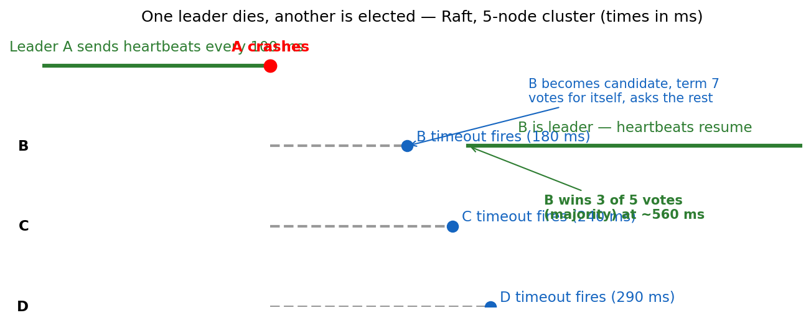
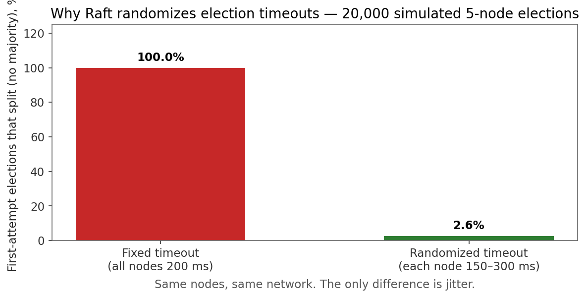
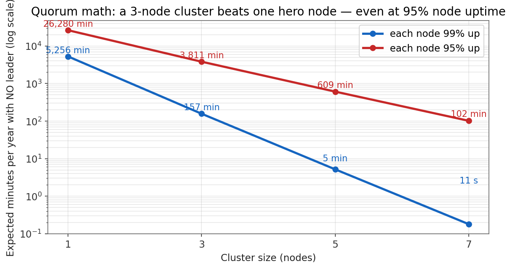
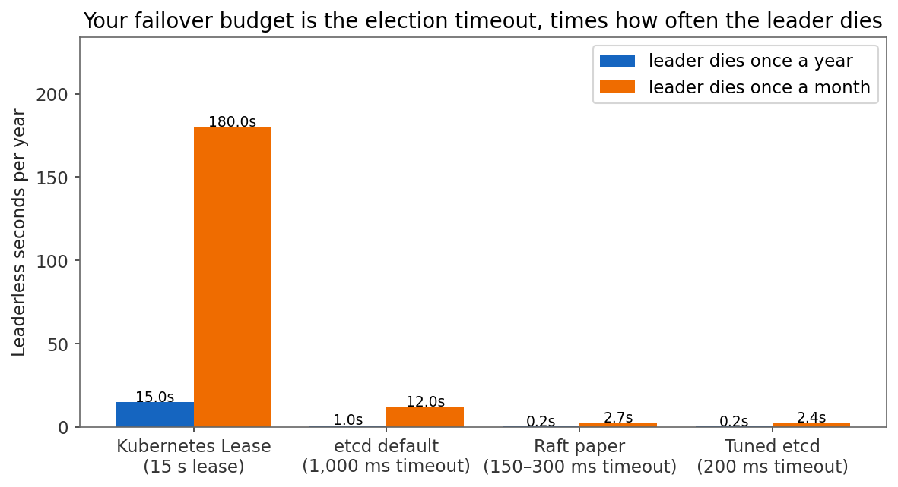

Every distributed system has one job that only one machine may do at a time. Somebody has to decide which write wins, hand out the next ID, say yes to the deploy. Give that job to two machines and they will disagree — and a system that disagrees with itself is worse than a system that is down, because down is honest and disagreement is silent corruption. So before a cluster can do anything else, it has to answer one question: who is in charge right now?
That question is leader election, and it is the first part of Season 2 because everything after it — consensus, transactions, locking — assumes a leader already exists. Season 1 was the map of a single system: load balancing, caching, sharding, queues, CAP, rate limiting, consistent hashing, replication, indexes, CDNs. Season 2 is what happens when the system itself is a committee: distributed systems, plainly. The benchmark hook for every part this season is a number you can check — availability arithmetic, a failure probability, a latency you can measure. This part's number is the leaderless window: how long your cluster has no leader at all, and what that costs you per year.
The ELI5 version
Imagine a classroom of five kids who have to pick one captain to call the plays. The rule is simple: the captain shouts "I'm still here!" every few seconds, and if the class goes quiet for too long, someone stands up and says "I'll be captain — who agrees?" Whoever gets three of five hands wins. Three is the magic number: with five kids, any two groups of three share at least one kid, so two captains can never both get three hands at the same time. That overlap is the entire safety argument, and it has a name: a majority, or quorum.
Three details make it work in real systems. First, the kids don't all stand up at the same instant — each waits a random amount of time before standing, so one usually goes first and wins cleanly instead of everyone shouting at once. Second, every election is numbered — a term — and an old captain's orders carry an old number, so the class can ignore them. Third, the captain has to keep shouting, or the class elects a new one. That is Raft leader election in one paragraph, and it runs etcd, Consul, CockroachDB, and Kafka's KRaft metadata quorum.
How it works: three roles, one term, a majority
Every node in a Raft cluster is in one of three states: follower (quiet, waits for heartbeats), candidate (running for leader), or leader (sending heartbeats, taking writes). A term is a monotonically increasing ballot number — every election attempt gets a new one, and a node only ever votes once per term, for the first candidate whose log is at least as up-to-date as its own.
The sequence, with real numbers from etcd's defaults:
- The leader dies. Followers notice the silence when their election timeout fires. In the Raft paper the timeout is randomized between 150 and 300 ms; etcd defaults to a 100 ms heartbeat and a 1,000 ms election timeout.
- A follower becomes a candidate. It increments its term, votes for itself, and sends
RequestVoteto every peer. - The vote. A follower grants its one vote per term only if the candidate's log is at least as current as its own — last log term first, then last log index. A stale candidate cannot win.
- The win. Majority —
floor(n/2) + 1— and the candidate is leader. Five nodes: three votes. It starts sending heartbeats immediately, which resets everyone else's timers and suppresses further elections.
In our toy timeline, the leader crashes and a new leader is in place about 260 ms later — most of it just waiting for the timeout to fire:

The randomized timeout is the whole trick. If every follower used the same 200 ms timeout, they would all fire at the same instant, all become candidates, each vote for itself, and nobody would reach a majority. We simulated 20,000 five-node elections: with identical timeouts, 100% of first attempts split in the toy model; with the randomized 150–300 ms window, 2.65% split — a ~38× improvement from jitter alone:

A split vote isn't a failure, just a wasted term: everyone waits for a fresh random timeout and tries again, and the odds of repeated collisions fall fast.
The quorum is what makes one leader per term a guarantee, not a hope. Two majorities in the same cluster must share at least one node, and that node votes once per term — so two candidates cannot both reach a majority in the same term. The availability arithmetic is the payoff. A single node that is up 99% of the time is leaderless 5,256 minutes a year. A 3-node cluster of nodes that are each up only 95% of the time is leaderless 3,811 minutes — three mediocre nodes beat one good one. At 99% per-node uptime, 3 nodes give 157 minutes a year, 5 nodes give 5.2 minutes, 7 nodes give about 12 seconds:

The catch is that this math counts electability, not health: a 3-node cluster tolerates one failure, a 5-node cluster two, a 7-node three. Lose more than that and no election can succeed at all — the cluster would rather be unavailable than wrong.
Your failover budget is the election timeout, times how often the leader dies. Detection takes one timeout; the vote itself is about one network round-trip. So the leaderless seconds per year are roughly timeout × leader deaths per year — and the tuning you choose is a 15× decision:

Kubernetes' own controllers use a 15-second lease with a 10-second renew deadline and a 2-second retry period — slow failover, but nearly impossible to flap. etcd's 1-second default fails over in about a second in a healthy cluster (1–3 seconds is the usual figure; 10–30 seconds under network stress or bad tuning). Tighten the timeout and you fail over faster; tighten it too far and ordinary latency spikes start fake elections, and the cluster spends its life campaigning instead of working.
The state of the art: you almost never elect a leader yourself
The modern pattern is two layers. The bottom layer is a consensus store — etcd, ZooKeeper, Consul — which elects its own leader with Raft and hands you a linearizable key-value store. The top layer is your service, whose replicas elect a leader by competing for a leased key in that store: whoever holds the oldest live key is leader, the lease is kept alive by heartbeats, and when the leader process dies the lease simply expires and the key disappears. No election runs at all — expiry is the election. etcd even refreshes lease expiries on its own leader change, so a store failover alone doesn't expire your application's sessions.
Inside the store, two refinements from the last decade do the heavy lifting. The leader lease lets a leader serve reads locally while it believes its lease is valid — a follower that accepted a heartbeat promises not to vote for anyone else until an election timeout has passed, so a leader holding a quorum of leases knows no new leader could have been elected. etcd defaults to the safer ReadIndex protocol for linearizable reads instead: confirm leadership with one heartbeat round before serving the read. And when the store's leader does change, Kafka's KRaft, CockroachDB, and etcd all run the same Raft election you just read about — the difference is only in the tuning and the log.
The research frontier in 2026 is still Raft, refined. A January 2026 vulnerability assessment (arXiv:2601.00273) catalogues the attack surface of standard Raft implementations — the protocol was designed for crashes, not adversaries, and Byzantine-tolerant variants are the open problem. CD-Raft (arXiv:2603.10555, March 2026) targets cross-domain clusters, where nodes sit in different administrative domains, and reports a 32.9% average latency reduction and 49.2% tail-latency reduction over standard Raft. The algorithm is twelve years old and still the default because the alternatives — Paxos, and its many dialects — trade understandability for the same guarantees. Raft won by being the one engineers can hold in their heads.
Why it breaks
Split-brain is the failure the whole design exists to prevent — and it still happens when the design is bypassed. In October 2018, a network partition between GitHub's data centers left the old MySQL primary accepting writes while the failover system promoted a replica: two primaries, both writing, and hours of reconciliation afterward. Raft's majority rule makes that outcome impossible inside the protocol; GitHub's failure was in the failover automation around the database, which promoted without a quorum. The lesson generalizes: an election that doesn't require a majority isn't an election, it's a coin flip with extra steps.
The stale leader is the quieter version. A partitioned leader doesn't know it lost. It keeps serving writes to whoever can still reach it, and when the partition heals, those writes collide with the new leader's. The fix is a fencing token: every leader carries its term number, and the store rejects any write from an older term. Our notebook demo is three lines of the idea — leader A at term 6 writes balance 100, leader B wins term 7 and writes 90, A's delayed write arrives and is rejected, balance stays 90. Without fencing, the last writer wins by arrival order, and arrival order after a partition is whoever's packets got there first. ZooKeeper's zxid, etcd's revisions, and Kubernetes' resourceVersion are all fencing tokens wearing different clothes.
Flapping is the self-inflicted version. Set the election timeout close to your p99 network latency and every latency spike looks like a dead leader: elections fire, the leader steps down, a new one is elected, and the cluster is leaderless a few percent of the time for no reason. The monitoring signal is etcd_server_leader_changes_seen_total — alert on more than 1–2 changes an hour — and the fix is boring: keep network RTT between members under 10 ms, don't tighten the defaults without profiling, and treat rising leaseTransitions on Kubernetes Leases as an early warning of control-plane latency, not a curiosity.
Asymmetric partitions break the lease shortcut. The leader-lease trick assumes a leader that can't reach a quorum also can't reach clients. In an asymmetric partition — the old leader can still reach some clients but not enough followers — it may serve stale reads while believing its lease is valid. That's why etcd defaults to ReadIndex for linearizable reads: prove you're still leader right now, to a quorum, before answering.
Takeaways
- A cluster needs exactly one leader, and the way to guarantee it is a majority vote in a numbered term — two majorities always overlap, so two leaders per term is impossible.
- The randomized election timeout is the split-vote brake: in simulation, identical 200 ms timeouts split 100% of first attempts; Raft's 150–300 ms window splits 2.65%.
- Three mediocre nodes beat one good one: a 3-node cluster at 95% per-node uptime is leaderless 3,811 minutes a year vs 5,256 for a single 99% node; 5 nodes at 99% is 5.2 minutes.
- Your failover budget is the election timeout times the leader-death rate: a Kubernetes Lease (15 s) costs 15× the leaderless time of etcd's default (1 s).
- In practice you don't run Raft yourself — you run etcd or ZooKeeper, and your service elects a leader by holding a leased key. Expiry is the election.
- Election alone doesn't stop a stale leader from writing. Fencing tokens — the term number on every write — do. Never build leader election without them.
Season 2 continues next: Part 2 is consensus itself — Raft vs Paxos, and what the leader actually does with the job once it wins it. If these plain-English breakdowns with real numbers are useful, follow along on dev.to — the next part is already queued, and the notebooks keep coming with it.
Honesty note: all simulation numbers are this machine's toy-model measurements, not production telemetry; the field figures are cited — Raft election timeout 150–300 ms and heartbeat from Ongaro & Ousterhout (2014); etcd defaults (100 ms heartbeat, 1,000 ms election timeout) and 1–3 s healthy failover from etcd/Kubernetes docs and 2026 guides; Kubernetes Lease defaults (15 s / 10 s / 2 s) from client-go; CD-Raft (arXiv:2603.10555) and the Raft vulnerability assessment (arXiv:2601.00273) as reported by their authors; the GitHub October 2018 split-brain incident as GitHub reported it. No Meta content, per the standing exclusion.